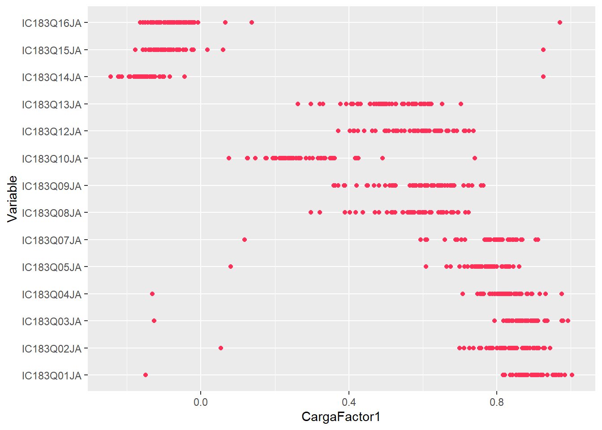
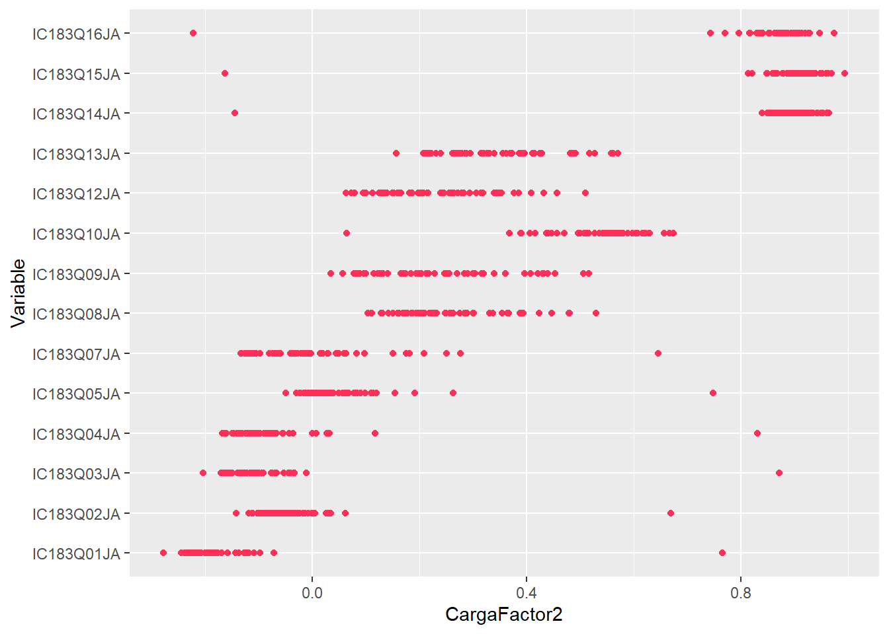
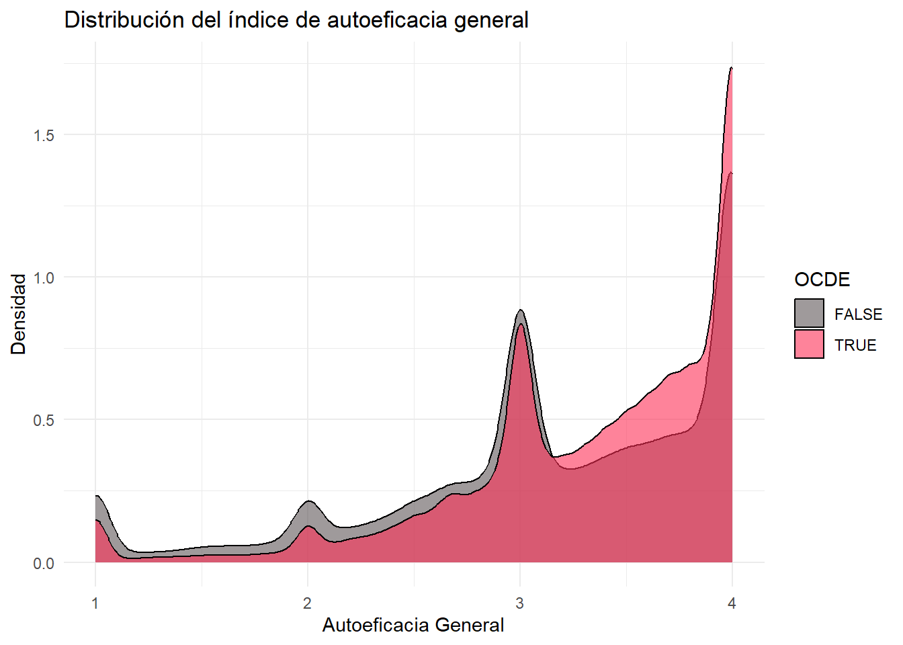
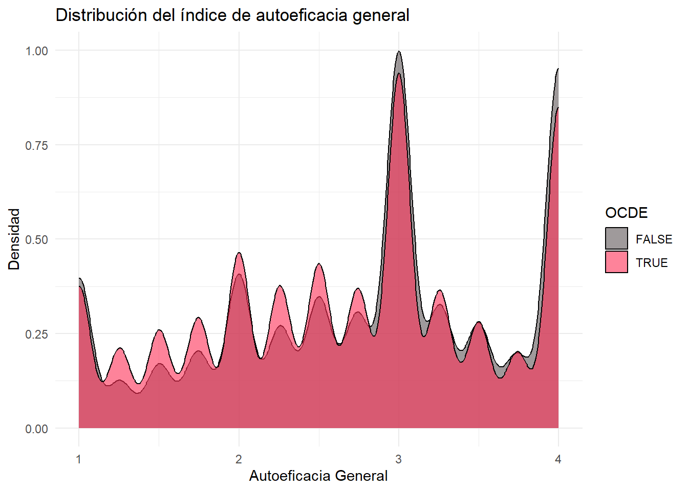
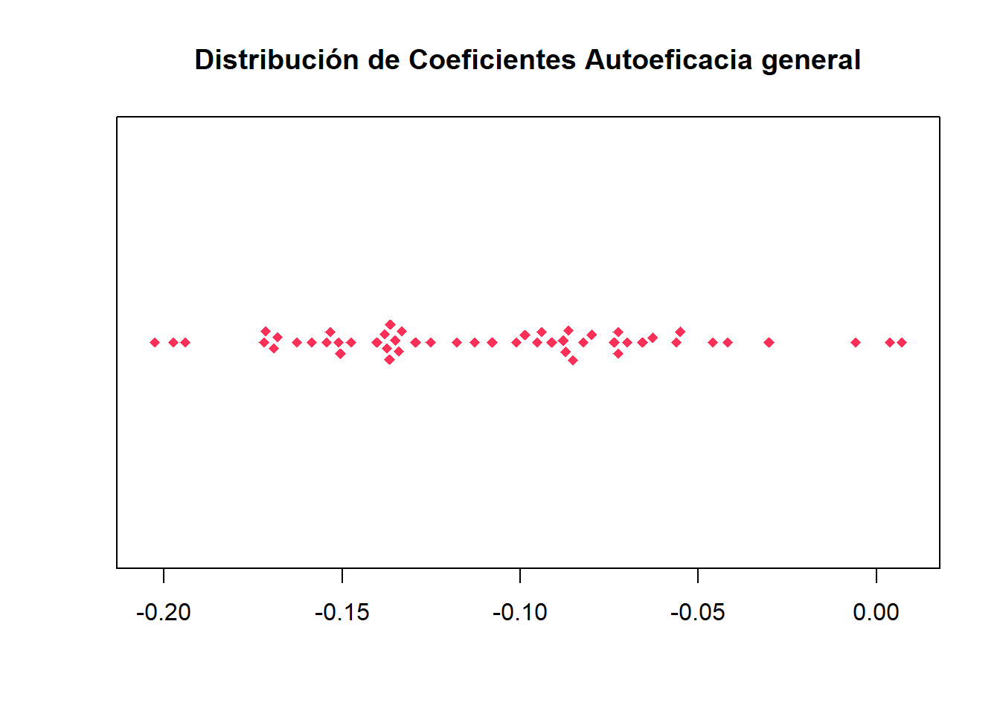
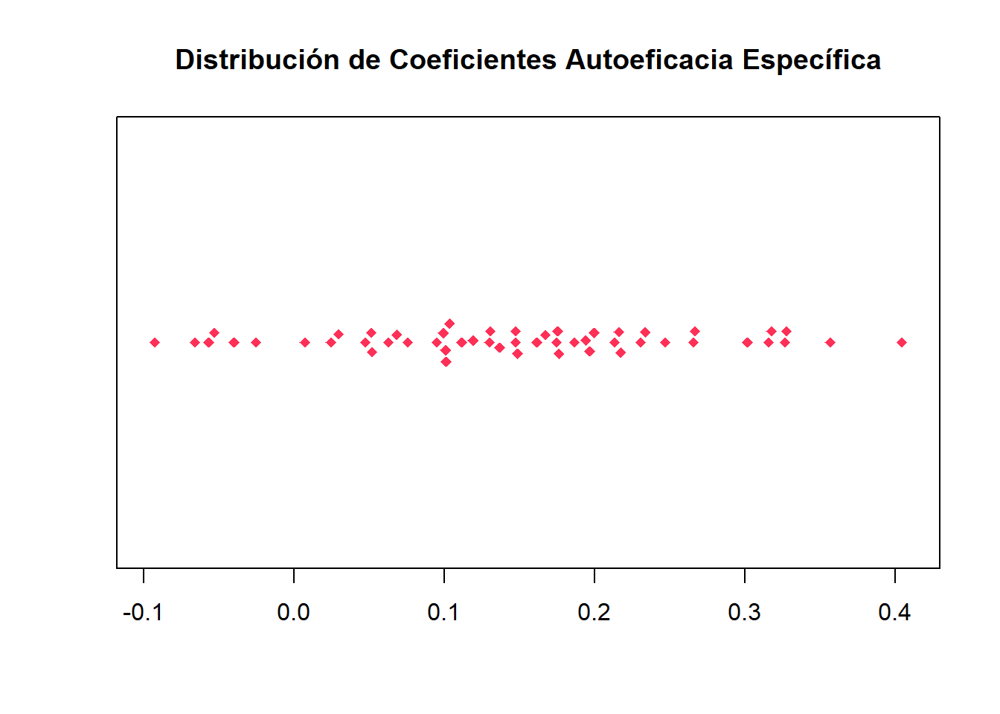
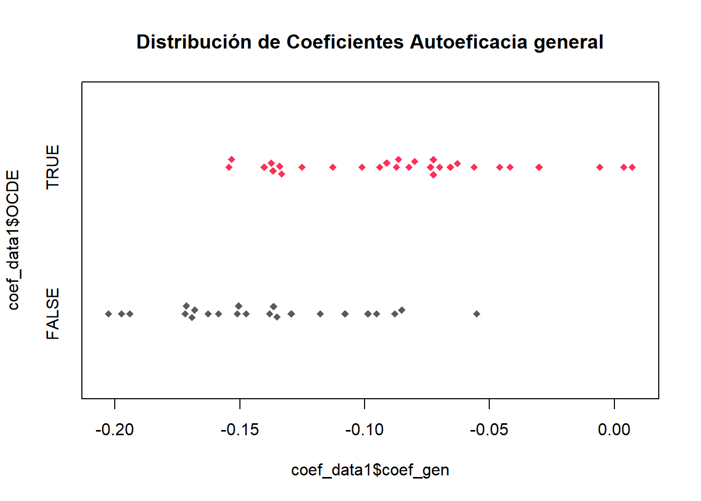
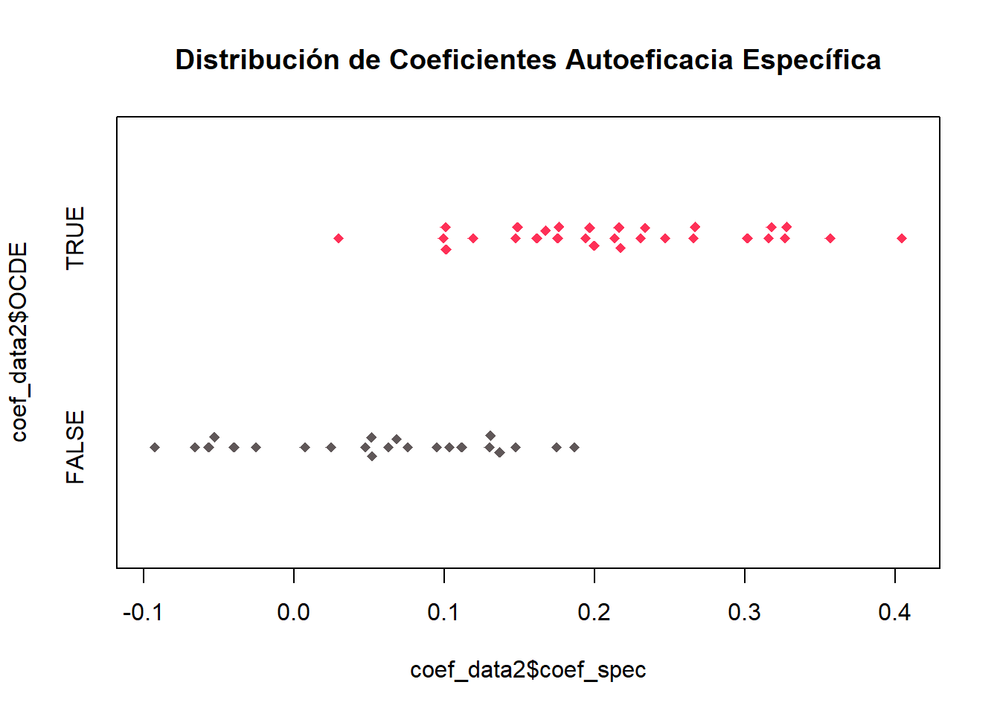

pacman::p_load(dplyr, haven, psych, purrr, tidyr, sjPlot, ggplot2, parameters, table1, beeswarm, lme4)
options(scipen = 999)
rm(list = ls()) PISA 2022
Análisis factorial y modelos lineales por país
pisa22ict <- readRDS("input/proc_data/pisa22ict.rds")Análisis factorial por país
#Datos para el análiis factorial
eff_data <- pisa22ict %>%
select(CNT, IC183Q01JA, IC183Q02JA, IC183Q03JA, IC183Q04JA, IC183Q05JA,
IC183Q07JA, IC183Q08JA, IC183Q09JA, IC183Q10JA, IC183Q12JA,
IC183Q13JA, IC183Q14JA, IC183Q15JA, IC183Q16JA)
# Group by CNT (código país)
resultados_factoriales <- eff_data %>%
group_by(CNT) %>%
group_split() %>%
map(~ fa(select(.x, -CNT), nfactors = 2, fm = "pa", rotate = "promax"))Loading required namespace: GPArotation# Tabla con todos los resultados por país
tabla_resultados <- map2_dfr(
resultados_factoriales,
unique(eff_data$CNT),
~ tibble(
Variable = rownames(.x$loadings),
CNT = .y,
CargaFactor1 = .x$loadings[, 1],
CargaFactor2 = .x$loadings[, 2]
)
) %>%
arrange(Variable)
tabla_resultados <- tabla_resultados %>%
mutate(Factor1 = if_else(CargaFactor1 >0.5, "TRUE", "FALSE")
) %>%
mutate(Factor2 = if_else(CargaFactor2 >0.5, "TRUE", "FALSE"))
view_df(tabla_resultados)| ID | Name | Label | Values | Value Labels |
| 1 | Variable | <output omitted> | ||
| 2 | CNT | Country code 3-character | ALB ARE ARG AUS AUT BEL BGR BRA BRN CAN CHE CHL COL CRI CZE <...> |
<output omitted> |
| 3 | CargaFactor1 | range: -0.2-1.0 | ||
| 4 | CargaFactor2 | range: -0.3-1.0 | ||
| 5 | Factor1 | <output omitted> | ||
| 6 | Factor2 | <output omitted> | ||
View(tabla_resultados)
tabla_resultados# A tibble: 728 × 6
Variable CNT CargaFactor1 CargaFactor2 Factor1 Factor2
<chr> <chr+lbl> <dbl> <dbl> <chr> <chr>
1 IC183Q01JA ALB [Albania] 0.921 -0.0975 TRUE FALSE
2 IC183Q01JA ARG [Argentina] 0.896 -0.210 TRUE FALSE
3 IC183Q01JA AUS [Australia] 0.910 -0.193 TRUE FALSE
4 IC183Q01JA AUT [Austria] 0.860 -0.207 TRUE FALSE
5 IC183Q01JA BEL [Belgium] 0.852 -0.176 TRUE FALSE
6 IC183Q01JA BRA [Brazil] 0.968 -0.244 TRUE FALSE
7 IC183Q01JA BRN [Brunei Darussalam] 0.937 -0.188 TRUE FALSE
8 IC183Q01JA BGR [Bulgaria] 0.817 -0.185 TRUE FALSE
9 IC183Q01JA CHL [Chile] 0.869 -0.183 TRUE FALSE
10 IC183Q01JA TAP [Chinese Taipei] 0.897 -0.189 TRUE FALSE
# ℹ 718 more rowsEn general la tendencia vista en el análisis factorial explotarorio global se repite. Sin embargo, llama la atención Corea, que invierte las dimensiones en la mayoria de las preguntas del índice (creo que es solo una la que si sigue la tendencia global). La pregunta Q08 tiene varios países con las dimensiones invertidas (Albania, Hong Kong, Jordania, etc.). Sin embargo muchos de estos se acercan a 0.5. Debemos establecer un criterio mínimo de magnitud de presencia del factor para descartar países o variables. La Q09 se comporta bastante similar a la Q08, revisar ambos casos. La Q10 parece ser del factor 2 sin embargo con una carga más baja que otras variables.
# Cleavelant dot plot
ggplot2::ggplot(tabla_resultados, aes(CargaFactor1, Variable)) +
geom_point() +
geom_point(
color="#fe3057"
)
ggplot2::ggplot(tabla_resultados, aes(CargaFactor2, Variable)) +
geom_point() +
geom_point(
color="#fe3057"
)
Agregar labels de los outlyers con geomtext: crear nueva columna en el dataframe
Al parecer, todas las variables calzan en una categoría exeptuando ICTQ10JA, que presenta cargas positivas y de magnitud similar en ambas dimensiones. Es posible ignorar esa pregunta para el análisis.
Q08, Q09, Q12 y Q13 tienen cargas similares en ambos factores.
Comparación índice de autoeficacia entre países OCDE y no OCDE
Creación de variable OCDE
pisa22ict <- pisa22ict %>%
mutate(OCDE = if_else(CNT %in% c("AUS", "AUT", "BEL", "CHL", "CRI",
"CZE", "DNK", "EST", "FIN", "DEU", "GRC", "HUN", "ISL", "IRL", "ISR", "ITA", "JPN", "KOR", "LTU", "LVA", "POL", "SVK", "SVN", "ESP", "SWE", "CHE", "TUR", "GBR", "USA"), "TRUE", "FALSE"))Comparación OCDE y no OCDE en los índices de autoeficacia
# Creación de función para calcular valor p dentro de table1, con prueba t o chi cuadrado según corresponda
pvalue <- function(x, ...) {
# Construct vectors of data y, and groups (strata) g
y <- unlist(x)
g <- factor(rep(1:length(x), times=sapply(x, length)))
if (is.numeric(y)) {
# For numeric variables, perform a standard 2-sample t-test
p <- t.test(y ~ g)$p.value
} else {
# For categorical variables, perform a chi-squared test of independence
p <- chisq.test(table(y, g))$p.value
}
# Format the p-value, using an HTML entity for the less-than sign.
# The initial empty string places the output on the line below the variable label.
c("", sub("<", "<", format.pval(p, digits=3, eps=0.001)))
}
# Tabla de descriptivos índice autoeficacia
tabla_1 <- table1::table1(~ effgen + effspec + ICTEFFIC + OCDE, data=pisa22ict, topclass="Rtable1-zebra", caption = "Tabla 1: Estadísticos Descriptivos índice",
footnote = "Fuente: Elaboración propia con datos de PISA.")
tabla_1| Overall (N=393607) |
|
|---|---|
Fuente: Elaboración propia con datos de PISA. | |
| effgen | |
| Mean (SD) | 3.27 (0.728) |
| Median [Min, Max] | 3.40 [1.00, 4.00] |
| Missing | 76895 (19.5%) |
| effspec | |
| Mean (SD) | 2.73 (0.917) |
| Median [Min, Max] | 3.00 [1.00, 4.00] |
| Missing | 86163 (21.9%) |
| Self-efficacy in digital competencies (WLE) | |
| Mean (SD) | -0.0414 (1.02) |
| Median [Min, Max] | -0.258 [-2.67, 2.34] |
| Missing | 82085 (20.9%) |
| OCDE | |
| FALSE | 165517 (42.1%) |
| TRUE | 228090 (57.9%) |
tabla_2 <- table1::table1(~ effgen + effspec + ICTEFFIC | OCDE, data=pisa22ict, topclass="Rtable1-zebra", overall = FALSE, extra.col=list(`P-value`=pvalue), caption = "Tabla 1: Estadísticos Descriptivos índice: Comparación OCDE y no OCDE",
footnote = "Fuente: Elaboración propia con datos de PISA.")
tabla_2| FALSE (N=165517) |
TRUE (N=228090) |
P-value | |
|---|---|---|---|
Fuente: Elaboración propia con datos de PISA. | |||
| effgen | |||
| Mean (SD) | 3.16 (0.798) | 3.35 (0.665) | <0.001 |
| Median [Min, Max] | 3.30 [1.00, 4.00] | 3.50 [1.00, 4.00] | |
| Missing | 36570 (22.1%) | 40325 (17.7%) | |
| effspec | |||
| Mean (SD) | 2.79 (0.924) | 2.69 (0.911) | <0.001 |
| Median [Min, Max] | 3.00 [1.00, 4.00] | 2.75 [1.00, 4.00] | |
| Missing | 42193 (25.5%) | 43970 (19.3%) | |
| Self-efficacy in digital competencies (WLE) | |||
| Mean (SD) | -0.129 (1.05) | 0.0177 (0.989) | <0.001 |
| Median [Min, Max] | -0.381 [-2.67, 2.34] | -0.194 [-2.66, 2.34] | |
| Missing | 40051 (24.2%) | 42034 (18.4%) | |
Decidí incluir el índice elaborado por PISA, sin embargo el rango de los datos está extraño para interpretar. Una conclusión a priori es que la autoeficacia específica es más alta en los países que no son de la OCDE, y la general es mayor en los países OCDE.
Gráficos de densidad para visualizar la distribución de los índices (comparación OCDE y no OCDE)
library(ggplot2)
# Crear un gráfico de densidad por grupos
ggplot(pisa22ict, aes(x = effgen, fill = OCDE)) +
geom_density(alpha = 0.6) +
labs(title = "Distribución del índice de autoeficacia general",
x = "Autoeficacia General",
y = "Densidad") +
scale_fill_manual(values = c("#5f5758", "#fe3057")) +
theme_minimal()Warning: Removed 76895 rows containing non-finite outside the scale range
(`stat_density()`).
# Crear un gráfico de densidad por grupos
ggplot(pisa22ict, aes(x = effspec, fill = OCDE)) +
geom_density(alpha = 0.6) +
labs(title = "Distribución del índice de autoeficacia general",
x = "Autoeficacia General",
y = "Densidad") +
scale_fill_manual(values = c("#5f5758", "#fe3057")) +
theme_minimal()Warning: Removed 86163 rows containing non-finite outside the scale range
(`stat_density()`).
Modelos de regresión lineal por país
# Crear modelos generales y específicos agrupados por código de país
modelo_effgen <- pisa22ict %>%
group_by(CNT) %>%
nest() %>%
mutate(modelo = map(data, ~lm(effgen ~ sex, data = .x)))
modelo_effspec <- pisa22ict %>%
group_by(CNT) %>%
nest() %>%
mutate(modelo = map(data, ~lm(effspec ~ sex, data = .x)))
# Extraer resúmenes individuales, manteniendo el CNT
modelo_effgen <- modelo_effgen %>%
mutate(summary = map(modelo, summary)) %>%
select(CNT, summary)
modelo_effspec <- modelo_effspec %>%
mutate(summary = map(modelo, summary)) %>%
select(CNT, summary)
# Crear nuevamente variable OCDE
modelo_effspec <- modelo_effspec %>%
mutate(OCDE = if_else(CNT %in% c("AUS", "AUT", "BEL", "CHL", "CRI", "CZE", "DNK", "EST", "FIN", "DEU", "GRC", "HUN", "ISL", "IRL", "ISR", "ITA", "JPN", "KOR", "LTU", "LVA", "POL", "SVK", "SVN", "ESP", "SWE", "CHE", "TUR", "GBR", "USA"), "TRUE", "FALSE"))
modelo_effgen <- modelo_effgen %>%
mutate(OCDE = if_else(CNT %in% c("AUS", "AUT", "BEL", "CHL", "CRI", "CZE", "DNK", "EST", "FIN", "DEU", "GRC", "HUN", "ISL", "IRL", "ISR", "ITA", "JPN", "KOR", "LTU", "LVA", "POL", "SVK", "SVN", "ESP", "SWE", "CHE", "TUR", "GBR", "USA"), "TRUE", "FALSE"))
# Crear un dataframe con las betas de los modelos
coef_data1 <- data.frame(
coef_gen = sapply(1:52, function(i) modelo_effgen[[2]][[i]][["coefficients"]][[2]]), Countrie = modelo_effgen [1], OCDE = modelo_effgen [3]
)
coef_data2 <- data.frame(
coef_spec = sapply(1:52, function(i) modelo_effspec[[2]][[i]][["coefficients"]][[2]]), Countrie = modelo_effspec [1], OCDE = modelo_effspec [3]
)Análisis descriptivo y visualización de estimadores por país
# Descrpitivos de los estimadores por país
df_aux <- dplyr::left_join(coef_data1, coef_data2) Joining with `by = join_by(CNT, OCDE)`tabla_3 <- table1::table1(~ coef_gen + coef_spec + OCDE, data=df_aux, topclass="Rtable1-zebra", caption = "Tabla 2: Estadísticos Descriptivos Estimadores",
footnote = "Fuente: Elaboración propia con datos de PISA.")
tabla_4 <- table1::table1(~ coef_gen + coef_spec | OCDE, data=df_aux, topclass="Rtable1-zebra", overall=FALSE, extra.col=list(`P-value`=pvalue), caption = "Tabla 3: Comparación OCDE y no OCDE",
footnote = "Fuente: Elaboración propia con datos de PISA.")
tabla_3 #La tabla se visualiza así por incompatibilidad del paquete con qmd. Sin embargo cuando se renderiza en html se ve bien| Overall (N=52) |
|
|---|---|
Fuente: Elaboración propia con datos de PISA. | |
| coef_gen | |
| Mean (SD) | -0.109 (0.0507) |
| Median [Min, Max] | -0.110 [-0.203, 0.00712] |
| coef_spec | |
| Mean (SD) | 0.145 (0.117) |
| Median [Min, Max] | 0.147 [-0.0924, 0.404] |
| OCDE | |
| FALSE | 23 (44.2%) |
| TRUE | 29 (55.8%) |
tabla_4 #La tabla se visualiza así por incompatibilidad del paquete con qmd. Sin embargo cuando se renderiza en html se ve bien| FALSE (N=23) |
TRUE (N=29) |
P-value | |
|---|---|---|---|
Fuente: Elaboración propia con datos de PISA. | |||
| coef_gen | |||
| Mean (SD) | -0.140 (0.0389) | -0.0840 (0.0451) | <0.001 |
| Median [Min, Max] | -0.148 [-0.203, -0.0551] | -0.0823 [-0.154, 0.00712] | |
| coef_spec | |||
| Mean (SD) | 0.0555 (0.0812) | 0.216 (0.0881) | <0.001 |
| Median [Min, Max] | 0.0630 [-0.0924, 0.187] | 0.213 [0.0299, 0.404] | |
Desviación estándar en los estimadores de autoeficacia específica es mucho mayor.
En ambas autoeficacias (específica y general), se percibe una diferencia significativa (p < 0,001) entre los países que pertenecen a la OCDE y los que no. Los datos apuntan a que la diferencia en autoeficacia específica es considerablemente mayor en los países de la OCDE, lo cual creo que podría deberse a una falta de recursos, que impide a los hombres (más interesados en aprender habilidades específicas) de países menos desarrollados diferenciarse en tal magnitud con las mujeres (esta hipótesis pierde fuerza al analizar el índice según OCDE y no OCDE). Esto podría ir en la linea del planteamiento de Nicolás, que la batería estaría midiendo más habilidades que autoeficacias. En la autoeficacia general el efecto es contrario, o sea, los hombres reportan muchas menores capacidades generales que las mujeres en los países no-OCDE que en los si-OCDE.
# Visualización de las distribuciones de las betas
beeswarm::beeswarm(coef_data1$coef_gen,
horizontal=TRUE,
method="swarm",
col=c("#fe3057"),
cex=1,
pch=18,
main= "Distribución de Coeficientes Autoeficacia general",
)
beeswarm::beeswarm(coef_data2$coef_spec,
horizontal=TRUE,
method="swarm",
col=c("#fe3057"),
cex=1,
pch=18,
main= "Distribución de Coeficientes Autoeficacia Específica",
)
# Visualización de las distribuciones de las betas, según país OCDE o no
beeswarm::beeswarm(coef_data1$coef_gen ~ coef_data1$OCDE,
horizontal=TRUE,
method="swarm",
col=c("#5f5758", "#fe3057"),
cex=1,
pch=18,
main= "Distribución de Coeficientes Autoeficacia general",
)
beeswarm::beeswarm(coef_data2$coef_spec ~ coef_data2$OCDE,
horizontal=TRUE,
method="swarm",
col=c("#5f5758", "#fe3057"),
cex=1,
pch=18,
main= "Distribución de Coeficientes Autoeficacia Específica",
)
Propongo instigar en los casos límites de ambos grupos
En los países OCDE, Chile es el que presenta menor diferencia en autoeficacia específica, lo cual se alinearía con la hipótesis presentada
En la autoeficacia general, la beta con menor efecto (en los paises no OCDE) es Argentina
Modelos de multinivel
pisa22ict$OCDE <- as.factor(pisa22ict$OCDE)
pisa22ict$CNT <- as.factor(pisa22ict$CNT)
modelo_3niveles_effgen <- lmer(effgen ~ sex + OCDE +
(1 | CNT), # Efecto aleatorio en Nivel 2
data = pisa22ict)
modelo_3niveles_effgen2 <- lmer(effgen ~ sex + OCDE +
(1 + sex | CNT), # Pendiente aleatoria en Nivel 2
data = pisa22ict)Warning in checkConv(attr(opt, "derivs"), opt$par, ctrl = control$checkConv, :
Model failed to converge with max|grad| = 0.00602937 (tol = 0.002, component 1)modelo_3niveles_effspec <- lmer(effspec ~ sex + OCDE +
(1 | CNT), # Efecto aleatorio en Nivel 2
data = pisa22ict)
modelo_3niveles_effspec2 <- lmer(effspec ~ sex + OCDE +
(1 + sex | CNT), # Pendiente aleatoria en Nivel 2
data = pisa22ict)Warning in checkConv(attr(opt, "derivs"), opt$par, ctrl = control$checkConv, :
Model failed to converge with max|grad| = 0.0031605 (tol = 0.002, component 1)sjPlot::tab_model(modelo_3niveles_effgen, modelo_3niveles_effgen2, modelo_3niveles_effspec, modelo_3niveles_effspec2,
title = "Tabla 5: Resultados de Regresiones Multinivel",
p.style = "stars",
dv.labels = c("effgen", "effgen pendiente aleatoria", "effspec", "effspec pendiente aleatoria"),
p.threshold = c(0.05, 0.01, 0.001),
show.se = TRUE,
digits =3)| effgen | effgen pendiente aleatoria | effspec | effspec pendiente aleatoria | |||||||||
|---|---|---|---|---|---|---|---|---|---|---|---|---|
| Predictors | Estimates | std. Error | CI | Estimates | std. Error | CI | Estimates | std. Error | CI | Estimates | std. Error | CI |
| (Intercept) | 3.316 *** | 0.030 | 3.256 – 3.375 | 3.317 *** | 0.031 | 3.255 – 3.378 | 2.546 *** | 0.036 | 2.475 – 2.617 | 2.479 *** | 0.049 | 2.383 – 2.575 |
| Student (Standardized) Gender |
-0.111 *** | 0.003 | -0.116 – -0.106 | -0.109 *** | 0.007 | -0.123 – -0.095 | 0.146 *** | 0.003 | 0.140 – 0.153 | 0.145 *** | 0.016 | 0.113 – 0.177 |
| OCDE: TRUE | 0.179 *** | 0.040 | 0.101 – 0.258 | 0.171 *** | 0.040 | 0.093 – 0.250 | -0.088 | 0.048 | -0.182 – 0.006 | 0.034 | 0.044 | -0.053 – 0.120 |
| Random Effects | ||||||||||||
| σ2 | 0.50 | 0.50 | 0.81 | 0.80 | ||||||||
| τ00 | 0.02 CNT | 0.02 CNT | 0.03 CNT | 0.09 CNT | ||||||||
| τ11 | 0.00 CNT.sex | 0.01 CNT.sex | ||||||||||
| ρ01 | -0.39 CNT | -0.86 CNT | ||||||||||
| ICC | 0.04 | 0.04 | 0.03 | 0.04 | ||||||||
| N | 52 CNT | 52 CNT | 52 CNT | 52 CNT | ||||||||
| Observations | 316693 | 316693 | 307425 | 307425 | ||||||||
| Marginal R2 / Conditional R2 | 0.020 / 0.059 | 0.019 / 0.059 | 0.009 / 0.043 | 0.007 / 0.049 | ||||||||
| * p<0.05 ** p<0.01 *** p<0.001 | ||||||||||||
Aviso: Model failed to converge with max|grad| = 0.00602937 (tol = 0.002, component 1)
Aviso: Model failed to converge with max|grad| = 0.0031605 (tol = 0.002, component 1)